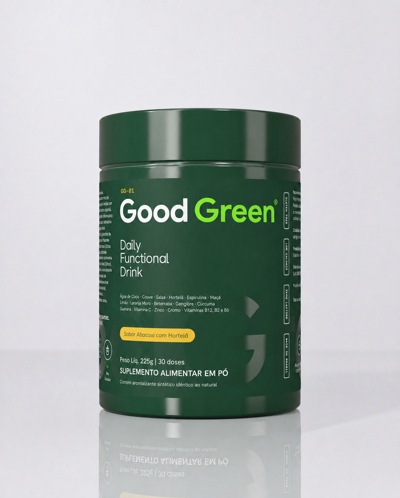

Você já tentou colocar verdes na rotina e desistiu na segunda semana?
Couve que estraga na geladeira, liquidificador para lavar, e aquele suco que ficou para amanhã. Depois vêm os potes: um de vitamina C, outro de complexo B, outro de zinco. Cada um com uma dose, um horário e um preço.
Foi assim que os greens em pó viraram moda. Mas, olhando rótulo por rótulo, a maioria não entrega o que promete na frente do pote.
O que ninguém te conta sobre greens em pó
Boa parte dos greens vendidos por aí usa um "blend proprietário": uma lista longa de ingredientes sem dizer quanto de cada um vai na dose. Você lê "couve, espirulina, clorela" e não sabe se são 3 gramas ou 3 miligramas.
O detalhe que quase ninguém olha: a tabela nutricional. É ela que diz, em %VD, quanto de vitamina e mineral vai de verdade em cada medida. Se a tabela não traz os valores, o pote não garante nada.
Por isso tanta gente desiste. Não porque greens em pó não funcionam na rotina. Mas porque estavam tomando o pote errado.
Os 3 critérios que separam um greens de verdade
1. Verdes de verdade na fórmula: couve e espirulina nomeadas, não só "mix de vegetais".
2. Vitaminas e minerais com %VD no rótulo: vitaminas C, B2, B6, B12, cromo e zinco, com o valor diário declarado por porção.
3. Dose que cabe na rotina: 30 doses por pote, uma medida em água, sem liquidificador.
Ranking: os melhores greens em pó de 2026
Ter os critérios certos é o primeiro filtro. Depois comparamos o que cada marca entrega por dose, o que vem no primeiro pedido e o preço por dose.
- Couve e espirulina nomeadas na fórmula
- Vitaminas C, B2, B6 e B12 com %VD no rótulo
- Padrão de 30 doses por pote
- Zero lactose e sem glúten
- Brinde no primeiro pedido e preço por dose
Dados dos concorrentes em conferência de rótulo antes da publicação
| Produto | Couve e espirulina? | Vitaminas com %VD? | Doses | Sem glúten e lactose? | Brinde 1º pedido | Preço por dose |
|---|
 Good Green GG-01 | Sim | C, B2, B6, B12 + cromo e zinco | 30 doses | Sim | Garrafa de vidro | R$ —
assinatura trimestral |
| Blend sem dose | Parcial | 30 doses | Sim | Não | R$ —
a conferir |
| Sim | Não informa | 25 doses | Sim | Não | R$ —
a conferir |
Greens C | Só clorela | Parcial | 30 sachês | Contém leite | Não | R$ —
a conferir |
Greens D | Não | Sim | 30 doses | Sim | Desconto | R$ —
a conferir |
Preço por dose calculado com o menor preço do site oficial de cada marca na data da atualização. Os preços podem mudar. Os critérios acima são lidos do rótulo e da tabela nutricional de cada produto.
O melhor greens em pó que comparamos
Nº 1 do ranking
Good Green GG-01
Daily Functional Drink · abacaxi com hortelã · 225 g · 30 doses
Por que gostamos
- Couve e espirulina nomeadas na fórmula, com gengibre, cúrcuma e guaraná.
- Rico em vitaminas C, B2, B6 e B12, cromo e zinco, com %VD declarado por porção de 7,5 g.
- Baixo em calorias, zero lactose e não contém glúten.
- 30 doses por pote: uma medida em 300 ml de água, uma vez ao dia.
- Sabor abacaxi com hortelã: zero gosto de grama.
- Garrafa de vidro de brinde no primeiro pedido da assinatura e frete grátis no plano trimestral.
O que poderia ser melhor
- É lançamento: ainda há poucas avaliações públicas.
- Um sabor só por enquanto. Novos sabores da linha estão em desenvolvimento.
Ver a oferta do nº 1 →
2º lugar
Greens A
Greens em pó · 30 doses
Destaques
- Lista longa de vegetais e frutas.
- Sem glúten e sem lactose.
O que poderia ser melhor
- Blend proprietário: não diz quanto de cada verde vai na dose.
- Vitaminas sem %VD completo no rótulo.
- Sem brinde no primeiro pedido.
3º lugar
Greens B
Greens em pó · 25 doses
Destaques
- Couve e espirulina nomeadas.
- Marca conhecida no mercado.
O que poderia ser melhor
- Tabela nutricional sem vitaminas e minerais.
- 25 doses por pote: acaba antes do mês.
4º lugar
Greens C
Greens em sachês · 30 sachês
Destaques
- Sachês práticos para levar.
- Vitamina C na fórmula.
O que poderia ser melhor
- Só clorela como verde nomeado.
- Contém leite: fora para quem evita lactose.
- Mais caro por dose.
5º lugar
Greens D
Multivitamínico em pó · 30 doses
Destaques
- Vitaminas com %VD declarado.
- Desconto no primeiro pedido.
O que poderia ser melhor
- Não tem verdes de verdade: é um multivitamínico colorido de verde.
- Sabor artificial, segundo as avaliações públicas.
O que esperar nas primeiras semanas
Greens em pó não é mágica, é rotina. O que muda primeiro é o hábito, e é isso que a maioria das pessoas conta:
Semana 1 e 2A medida vira parte do café da manhã. Sem liquidificador para lavar, o verde para de ser adiado.
Semana 3 e 4Os potes separados de vitamina saem do armário: uma bebida só, uma vez ao dia.
Mês 2 e 3Com a assinatura trimestral, o próximo pote chega antes do atual acabar. A rotina deixa de depender de lembrar de comprar.
Escolha o seu kit do nº 1 do ranking